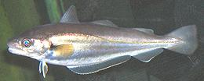
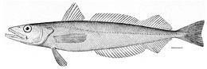
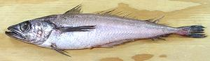

Cod fisheries have been so economically important on both sides of the Atlantic, wars have been fought over them. There are many varieties of cod in both the North Atlantic and North Pacific, a number of which are economically important, but there are even more fish called "Cod" that aren't cod at all. Photo of Atlantic cod by Hans-Petter Fjeld distributed under license Creative Commons Attribution-ShareAlike 3.0 Unported.
More on Varieties of Fish
(very large page).
This highly commercial North Atlantic fish can grow to 78 inches and over 200 pounds. Populations are found off North America from Cape Hatteras to northern Canada, off Europe from Northern France through the Barents Sea and off Greenland and Iceland. Atlantic Cod populations have been over-fished and are rated "Vulnerable". Efforts are underway in Norway to develop methods for farming this fish.
Cod produces white, mild flavored, low fat flesh that holds together
well when cooked but flakes easily. It's one of the three fish used for
British Fish and Chips (the other two are
Haddock and
Plaice. Cod is also smoked, dried
(stockfish) and salted. Dried is particularly popular in the Basque
country and Portugal. We don't have Atlantic Cod here on the Coast of
California, but our Pacific Cod page will probably be pretty close for
Details and Cooking.
Photo by Bartlomiej Stroinski
[Bacalao (Basque, Spanish); Baccala (Italian); Bacalhau (Portuguese)]
Salt Cod was once an important staple in Europe, particularly Spain, Portugal, and Italy. The fishery, off the coast of Newfoundland, was discovered by Basque whalers, and they invented the salting technique still used today (the Norwegian Vikings freeze dried their cod).
While fish can be transported and stored frozen today, the
unique flavor of salt cod is still much favored in the cuisines of
Spain, Portugal and Italy, as well as Canada and Brazil. The photo
specimen was 19-1/2 inches long, 7 inches wide and 1-1/2 inches
thick at it's thickest point, and weighed 2.3 pounds. It was
purchased from an Italian market in Los Angeles, for 2012 US $ 11.99
per pound.
Details and Cooking.
This species has a distribution in the North Pacific similar to that of Atlantic Cod in the Atlantic. It is found as far south as the Yellow Sea and the coast of Southern California. This fish can grow to about 4 feet and 50 pounds but the photo specimen, from Canada, was 6.9 pounds and 25 inches long.
This cod is not as threatened as the Atlantic cod, particularly since
McDonalds has shifted to Alaskan Pollock (a cod relative) for their
fish sticks. The Bering Sea and Aleutian Island fisheries have been
certified by the Marine Stewardship Council as responsible and
sustainable.
Details and Cooking.
This is a highly commercial North Atlantic fish closely related to cod, found from the Arctic Circle to as far south as New Jersey and the north coast of France. They can get as large as 39 inches and 37 pounds.
Haddock flesh is much like cod, white, firm, low fat and holds
together well when cooked. It is much used for British Fish and Chips.
Haddock are sold fresh, dried and smoked, but, unlike cod, they don't
take salting well.
Details and Cooking.
This name is rather non-specific, but generally refers to smaller members of the order Gadiforms (cod, haddock, hake). In European recipes just "Hake" would mean European Hake (Merluccius merluccius) or New England Whiting (Silver Hake) but Pacific Whiting (Pacific Hake) would work fine too.
I recently purchased frozen fillets labeled "Hake, Wild Catch, China", but no fishbase listed Hake lives anywhere near China. Most listed hake are from closely along the Pacific or Atlantic coasts of the Americas and Europe, though some are from southern Australia / New Zealand. I'm pretty sure these fillets were actually Pollock. The illustration (copyright expired) is of European Hake (Merluccius merluccius), native to the Mediterranean, Black Sea and North Atlantic from Mauritania to the Norwegian Sea.
European Hake / Whiting [English Whiting, North Sea Whiting, Merlangius merlangus]
Native to the eastern North Atlantic and Baltic Sea, and through the
Mediterranean and Black Sea, this is the "whiting" called for
in European cookbooks. It was formerly considered a fish for the poor,
but due to general overfishing of European waters it is now valued more
highly. This fish can grow to 27 inches and over 6-1/2 pounds, but is
commonly caught at 9-1/2 inches. We do not have European Hake here
in Southern California, but this fish is of the same genus as the
Pacific Hake, so that page will probably serve for
Details and Cooking.
Photo by Georges Jansoone distributed under license
Creative Commons
Attribution-ShareAlike 3.0 Unported.
New England Hake / Whiting [Silver Hake, New England Hake, Merluccius bilinearis]
This cod relative is native to the western North Atlantic from South
Carolina to a bit north of Newfoundland, Canada. This fish is highly
commercial, but most of the catch is exported to Europe where hake is
more in demand, particularly in Portugal. This fish can grow to 30
inches and over 5 pounds, but are more likely to be less than 15
inches. This fish is so similar to the Pacific Whiting we presume
you can use the same page for
Details and Cooking.
Drawing © expired = public domain.
Pacific Hake / Whiting [North Pacific Hake; Merluccius productus]
This cod relative is native to the eastern North Pacific from southern
Mexico to southern Alaska, and is very similar to the Silver
Hake found on the Atlantic side. Pacific Hake doesn't keep well, so
it is usually processed immediately at sea. Most of the catch is
processed into surimi and similar products, as well as fish meal for
aquaculture. Some is sold dressed for human consumption: gutted,
headless and frozen. The fishery is highly regulated and this fish is
IUCN Red List LC (Least Concern). Pacific Hake can grow to 35 inches
and over 2-1/2 pounds, but the photo specimen was 15-1/2 inches
and weighed 13-3/4 ounces.
Details and Cooking.
|
Native to the North Pacific through the Sea of Japan, around Alaska and
down to Carmel, California, Alaska Pollock are the largest fish harvest
in the world at 3 million tons per year. Most is made into sirimi
(artificial crab meat) and McDonald's fish sticks. This fish can grow
to 35 inches and 8-1/2 pounds, but the photo specimen was 16-1/4 inches
and 1 pound 4 ounces. Alaska Pollock is considered a sustainable catch
by marine ecologists, IUCN Red List NE (Not Evaluated). Norway Pollock
is a very rare fish and considered near threatened. It is genetically
the same as the Alaska Pollock but has a few minor differences in
appearance.
Details and Cooking.
P. virens is native from North Carolina, north across the southern
coast of Greenland, and along European coasts from northern Finland south
to France. It is is a commercially important fish, but catch is only 1/7th
of Pacific Pollock catch. P. pollachius has a similar range but
no farther west than Iceland. Commercially it is bycatch, but it is
highly regarded for sports fishing. Both species can grow to 43 inches
and 46 pounds. The main use for both is fish sticks and similar products,
though some smaller ones are dried. These fish are not considered
threatened, and are IUCN Red List NE (P. virens) and LC
(P. pollachius).
Photo of Pollachius virens by Tino Strauss
distributed under license Creative Commons
Attribution-ShareAlike 3.0 Unported.
See Alaskan / Norway Pollock for
details of prep and cooking.